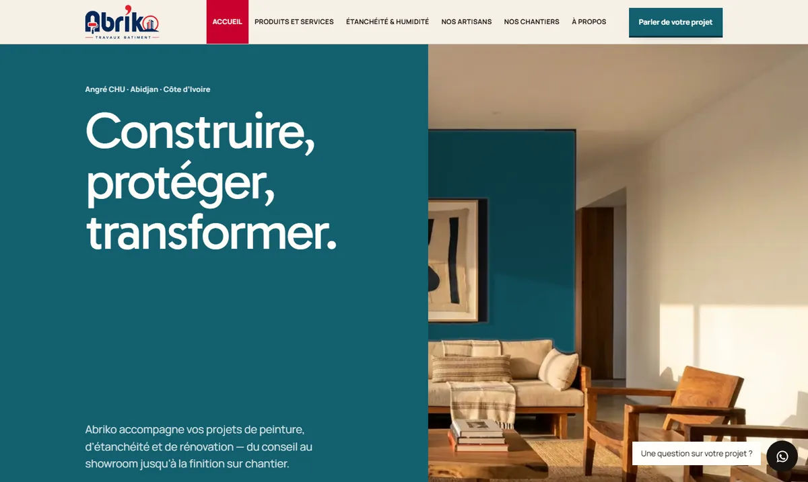

N°01Bleu Angré

ABRIKO — Travaux Bâtiment
Site du premier showroom franchisé Seigneurie® de Côte d'Ivoire. Idée centrale : la couleur est une matière qu'on fabrique ici. Le visiteur choisit une teinte du nuancier et elle repeint tout le site en direct ; les contrastes du texte sont recalculés à chaque changement pour rester lisibles, du blanc cassé au bleu nuit.
Troisième direction artistique après deux versions refusées « correctes mais sans vie » : on a ajouté matière, relief et mouvement.